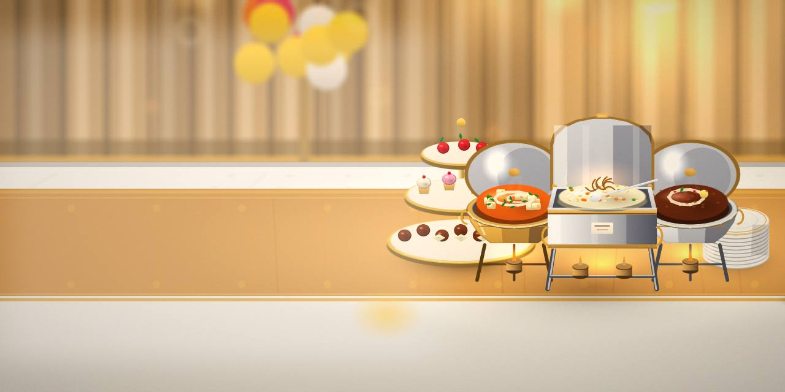
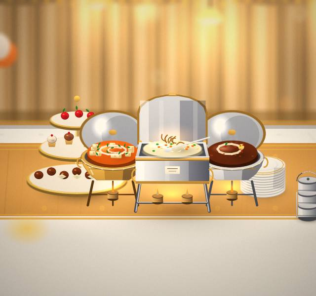
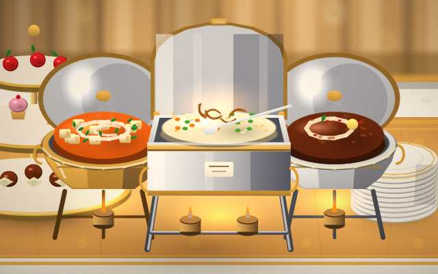
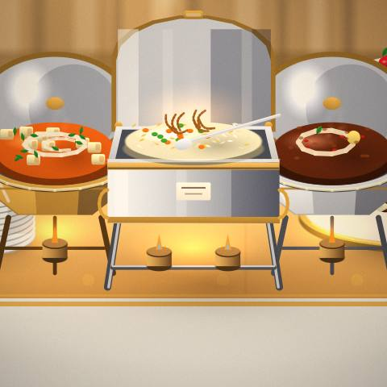
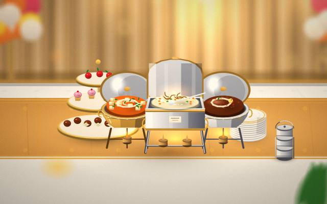
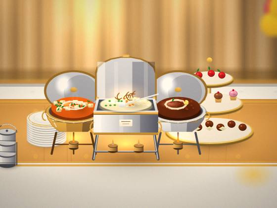

Weddings
Bring your questions about weddings.

Catering Service · Lucknow
A real person replies to every message.

Save room for dessert. We cook weddings and parties in Lucknow.
You'll find us in Lucknow. Send a short message and we will take it from there.
Bring your questions about weddings.
If parties is why you came, let us know when you book.
Ask the team what goes into Platters; they like the question.
Menus: ask for details before you decide.
Desserts is on the menu; ask what pairs well with it.




Tell us the day and the size of the group.
Pick from weddings or parties, or ask the team for a suggestion.
Stay for coffee if the conversation is good.
How to give yourself time.
The first steps, without the jargon.
Plain answers beat long brochures.
Tell us what you eat and we'll point you to the dishes that suit.
We're in Lucknow; get in touch for directions.
Yes; let us know what you'd like to know about weddings.
We will tell you what to bring or prepare when you reach out.
Start with a table; finish with dessert.
Book a table